01
Emergency
Can’t wait at all. A hospital, an ambulance, a helpline. There are systems for these already exist.
a moment just for you
A bookable, low stimulation pause space on college campus for students running on without rest, for somewhere to step out, reset and return to the work.
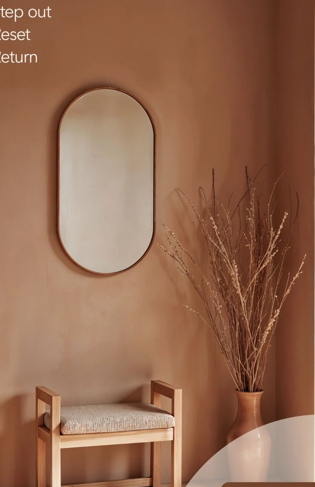
Step out
Reset
Return
01 · The brief
Some needs don’t wait. They show up, stay a minute and leave the person improvising. It is easy to ignore, hard to escape. So before choosing one, we asked: what makes a need “momentary”?
01
Can’t wait at all. A hospital, an ambulance, a helpline. There are systems for these already exist.
02
Needed today, not this second. A laptop in repair before a deadline, a form to file by evening.
03
Needed right now, gone within the hour. A charger, a quiet corner, twenty minutes alone and nothing built for them.
← this is where we focused
Trigger
External or internal; a specific situation or a general discomfort.
Value exchange
What the person gives up for what they get.
Resolution
The alternatives, flexibility and access available in that moment.
Satisfaction
The signal that tells someone the need is met.
Consequence
What happens when it isn’t.
Wheelchair · midnight printer · travel trolley · external webcam for interviews · formal attire before a meeting · BP machine · foldable bed · hardware tools · ladder · a laptop or phone while yours is in repair · charger · helmet · walker
Someone to sit overnight with an admitted patient · a driver on call · extra cooking help during a function · a queue-holder for hospital bookings
Instant translators · home-cooked food while away from home · help understanding a legal document or form · Dead line complex form filling like ITR
Need statement · first draft
“Indians, across cities and towns, need instant, low-friction access to whatever they momentarily require — a thing, a service, or a helping hand — because most needs are episodic and unpredictable, yet the market lacks a way to meet them in the moment.”
too broad to design for → so we went and asked students
02 · Survey on campus
It began with a quick poll in a student WhatsApp group, then moved into one-on-one interviews: the small, sudden needs that catch students off guard between classes, studio hours and deadlines
Hover each optionTap each option
60%
of the students we interviewed named personal space as the need they feel most often.
The most needed thing is not a thing or assistance, it is a place.
03 · Primary need statement
For each student personal space means something different. Through research we traced what is a personal space means for them, how they cope up with it and when they reach for it the most.
The sleepless stretch before a deadline.
Hours of talking, critiquing, agreeing.
Escaping constant studio noise and visual clutter.
Too hot, too cold, too long on a hard stool.
Emotional discomfort that needs a moment alone.
Frustration from being stuck on a design problem.
A moment when nobody is watching you.
Something lands, and there’s nowhere to take it.
“Rooms where nobody bothers me; where I can just sit with my thoughts.”
04 · Who needs it
The interviews revealed four kinds of students, grouped by why they need a personal space. Cards are clickable to see what drives each one and how they cope today.
Archetype 01
Up for 24 hours before a submission; needs a short nap without losing the night.
Archetype 02
Something has landed — bad news, a break-up, pressure — and there’s nowhere to be alone with it.
Archetype 03
Overloaded by critique, noise and group work; needs to switch off before switching back on.
Archetype 04
Body first: posture, eye strain, cramps or headaches after long studio days.
Archetype 01, the Deadline Sprinter, and Archetype 03, the Overloaded Mind: most of the students interviewed were looking for a third space for these reasons.
05 · Existing alternatives
Permanent spaces set aside for calm.
Dim light, bean bags, recliners.
Quiet, but built for a single purpose.
Noise-cancelling chairs, fidget devices (Georgia State).
Soft seating, plants, low stimulation.
Informal calming, disengaging rooms.
Self-contained units for a short reset.
Capsule stations in libraries.
20-minute naps with music and vibration.
Massage chairs, light therapy, meditation pillows.
Temporary, set up around peak stress.
Light simulation, sleeping floor cushions (NYU).
Began as a tent; became a dedicated nap room during midterms and finals.
Rest without a place at all.
Guided meditation and recharge apps like Calm and Headspace.
Our takeaways
06 · Defining the service
What it is
A dedicated, quiet, low stimulation space next to the studio building, open to studio students during long work hours; including late nights before submissions for short rest: napping, quiet sitting or basic recovery.
What it isn’t
Not a dorm or overnight stay, a medical facility, a counselling room or a general lounge. Long sleep, medical care or emotional support are routed to the hostel, health centre or counselling services.
Who runs it
Owned by Student Wellness Committee; Facilities Management handles upkeep, and the studio coordinator schedules access.
How it works
A student books or walks into a minimal paid slot, rests for 30, 45 or 90 minutes and leaves and the space is reset for the next person, with no disruption to the studio.
The needs of the two chosen archetypes were translated into requirements for the space before ideating.
Core need
Sleep + a guaranteed wake-up + temperature control + a peaceful, silent environment.
Privacy
Temperature control
Urgency
Noise tolerance
07 · Prototyping β1
With the ideation parameters set, the first live version of the service opened on campus, complete with its own brand, posters, space, timings, booking and feedback.
Before building anything, the team sketched the shapes a personal space could take.
Pitch it anywhere for a quick, private nap.
A chair under an arched canopy, with a lamp and a side table.
Soundproof, standard-sized and booked through an app that shows if it is free.
Anonymous notes or calls with a stranger, with no sharing of names.
Take an unused corner of campus and make it usable.
What goes inside
A floor lamp and a small bulb in place of harsh overhead tubes.
Open to the sky on one side, with a fan for still nights.
Soft cloth overhead and as curtains. It filters light and closes off the space.
Tucked at the end of a quiet corridor, so the studio noise stays behind.
Potted plants bring something living into a concrete corner.
Tie the fabric shut from inside, flip the sign outside, and no one looks in.
Mats, a throw and floor cushions to sit, sprawl or lie down.
Water, a charging point and a speaker, kept low.
Students’ WhatsApp group
offspace team
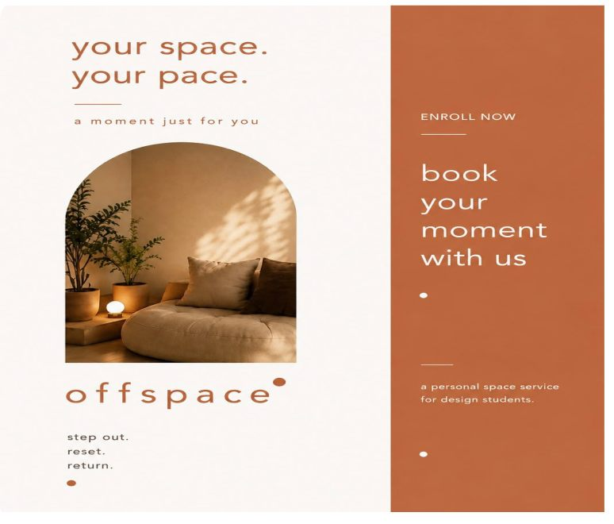
A moment, just for you. Hey everyone, We’re piloting something new on campus: a quiet personal space, for whenever you feel like being by yourself for a bit. No explanation needed, no fixed reason required. It’s meant for the moment you need it, simple as that. DM us at 73866 ••••• to book a slot and we’ll take it from there. Open for bookings from now. Note: Single person entry and max 30 minutes slot available, during initial service. It’s a free service.
Visibility
β1 was announced with one message and a poster in the students’ WhatsApp group. No explanation needed, no reason required.
Booking · confirmation · location
Everything after the announcement was a short WhatsApp conversation with the team, from asking for a slot to finding the space.
click a step, or tap the phone →
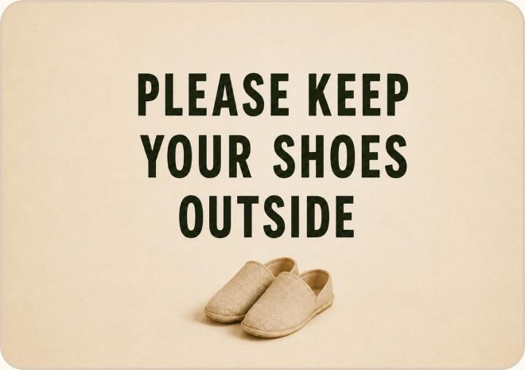
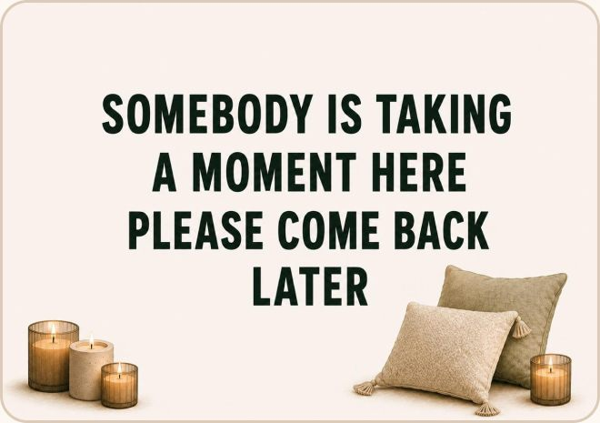
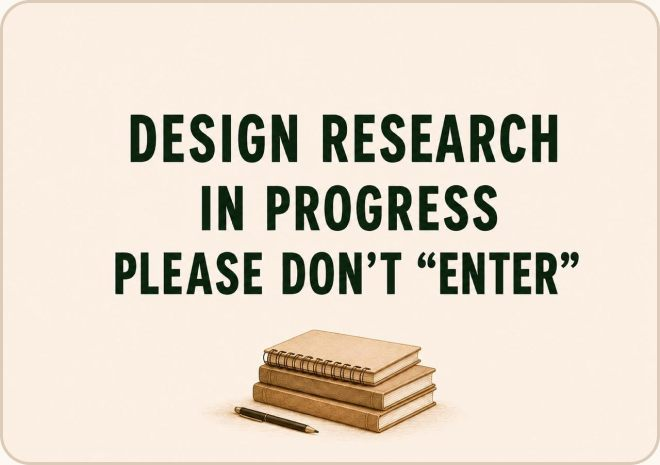
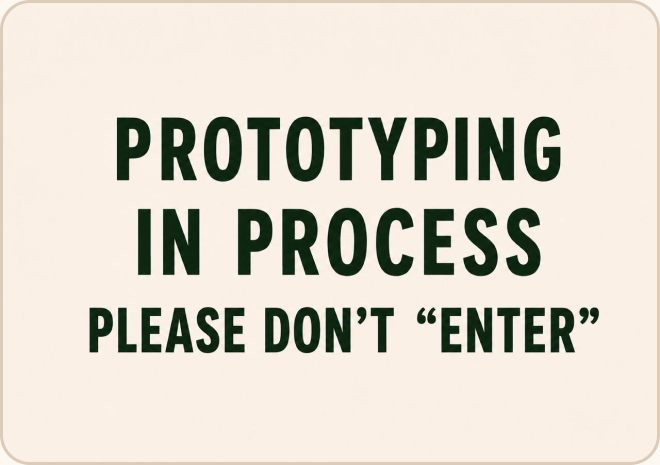
Flip it to “in use” on the way in, and back to “vacant” on the way out.
Visual signage
Printed signs set the rules without anyone having to say them. A board outside flipped between “vacant” and “in use”.
Your moment
Inside, the time was theirs: lie down, read, watch something, or simply sit with the lamp on and the fan going.
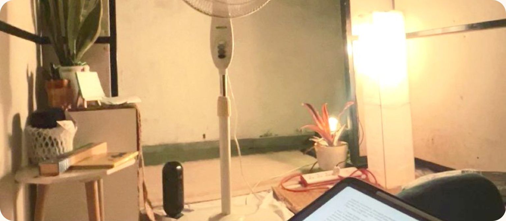
Although your slot is 30 minutes, it’s completely up to you if you want to leave before.from the house rules sent before each visit
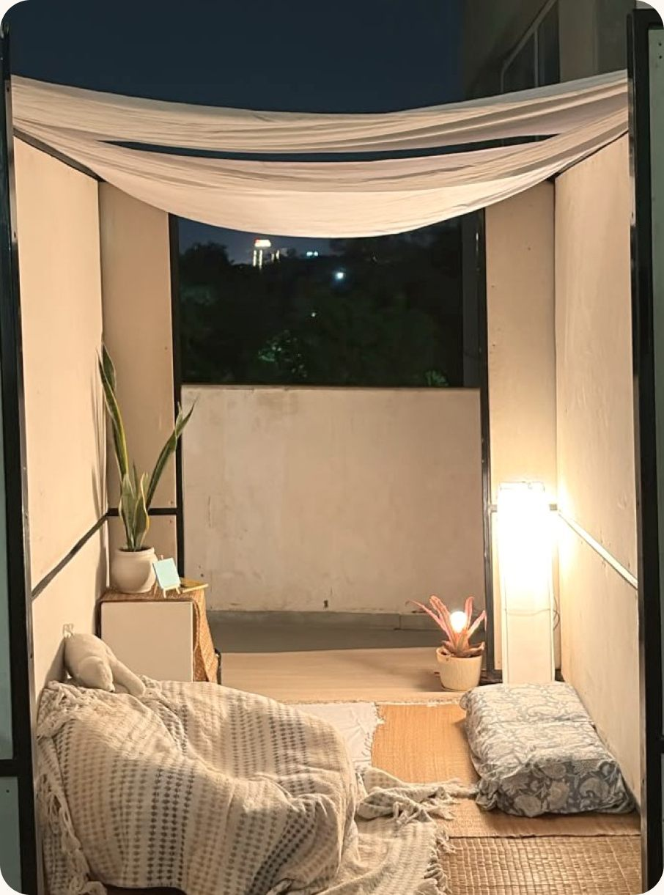
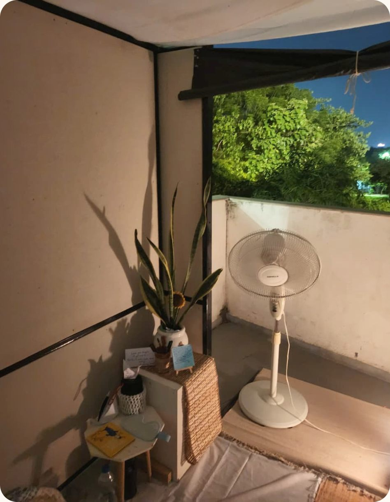
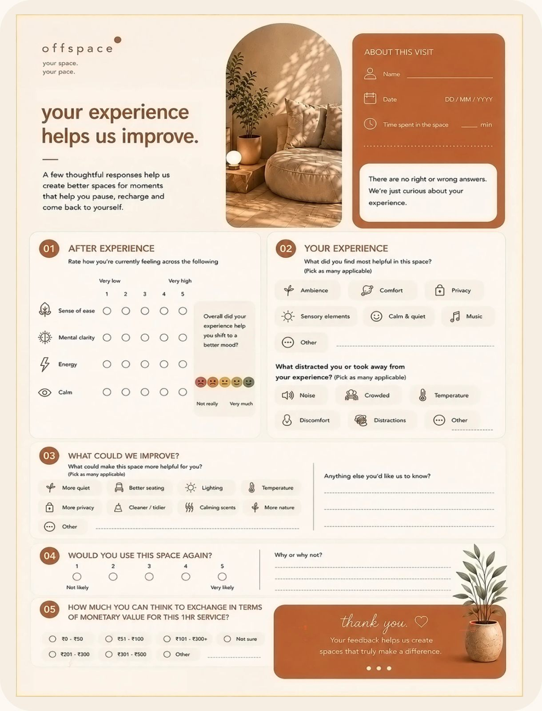
Feedback
Every visit closed with a quick feedback form, so the next version could be shaped by the people who had used this one.
08 · User feedback
Every β1 visitor left feedback. We mapped what worked, what didn’t and what they suggested, person by person.
The ones marked “fix first” shaped the next round.
mosquitoes → a net + incense sticks
Fix firstLater
09 · Prototyping β2
After the β1 feedback, the team ideated again and moved the service to a spot on campus that met the fix first criteria. β2 ran on 20 & 21 September with its own brand, posters, QR booking and paid.
The β1 fixes became a brief for the location itself. The tunnel beside the amphitheatre met each one.
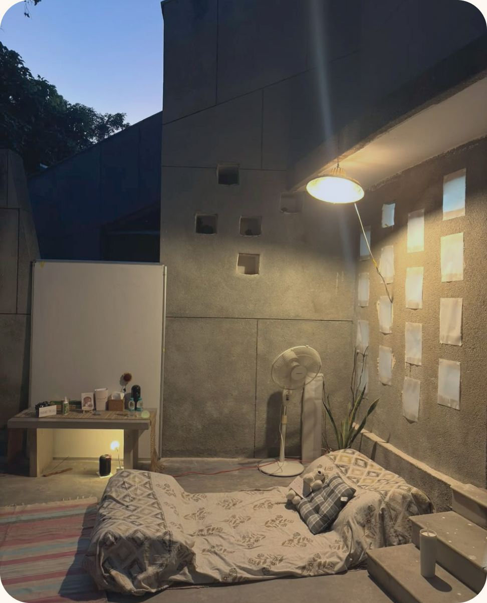
All the touch points of a user from slot booking to feedback giving. The Whats App trail (auto generated notification system) stayed the same as β1.
One visual language across every touchpoint, from the first poster to the snack box inside.
Brand identity
Logo, Color pallet, Fonts
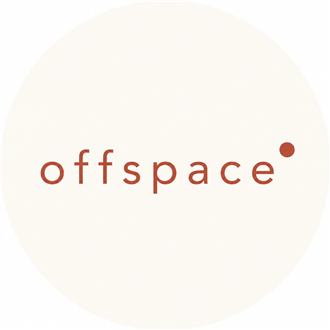
01 / 13
A few essential-oil candles to pick from, to set the mood.
More planters around the mattress and the reading corner.
A bigger floor, with seating as well as a place to lie down.
A small choice of titles for leisure reading.
Lamps and small warm bulbs, layered rather than one fixed light.
Complimentary bottles, so no one has to leave for a drink.
Snacks and drinks chosen at booking, waiting inside a branded snack box.
Burning before each slot, a direct fix from the β1 feedback.
Sketch pens and a pad that said “leave your thoughts here”.
A speaker paired in three steps, with a card that shows how.
One person per slot, in a corner of campus that people don’t pass through.
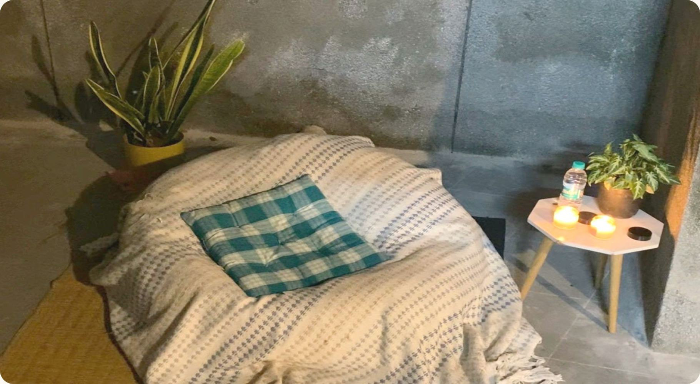
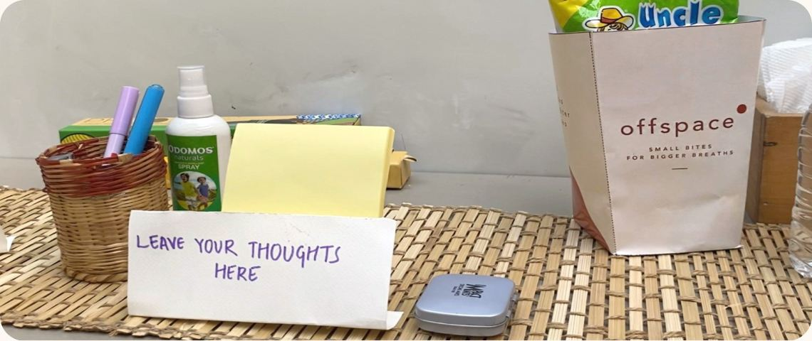
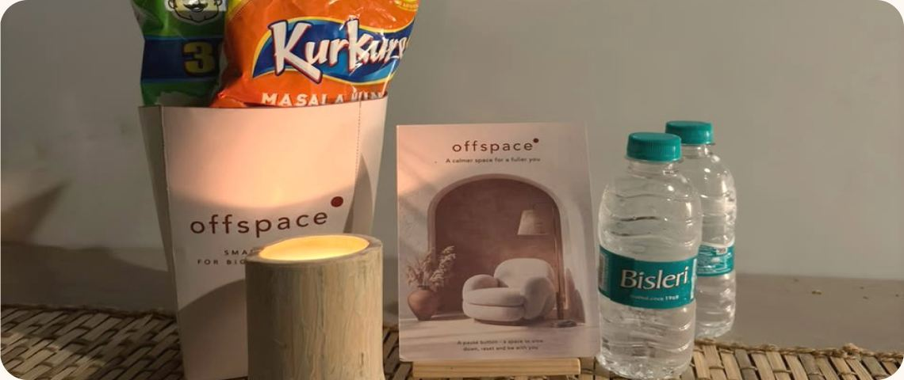
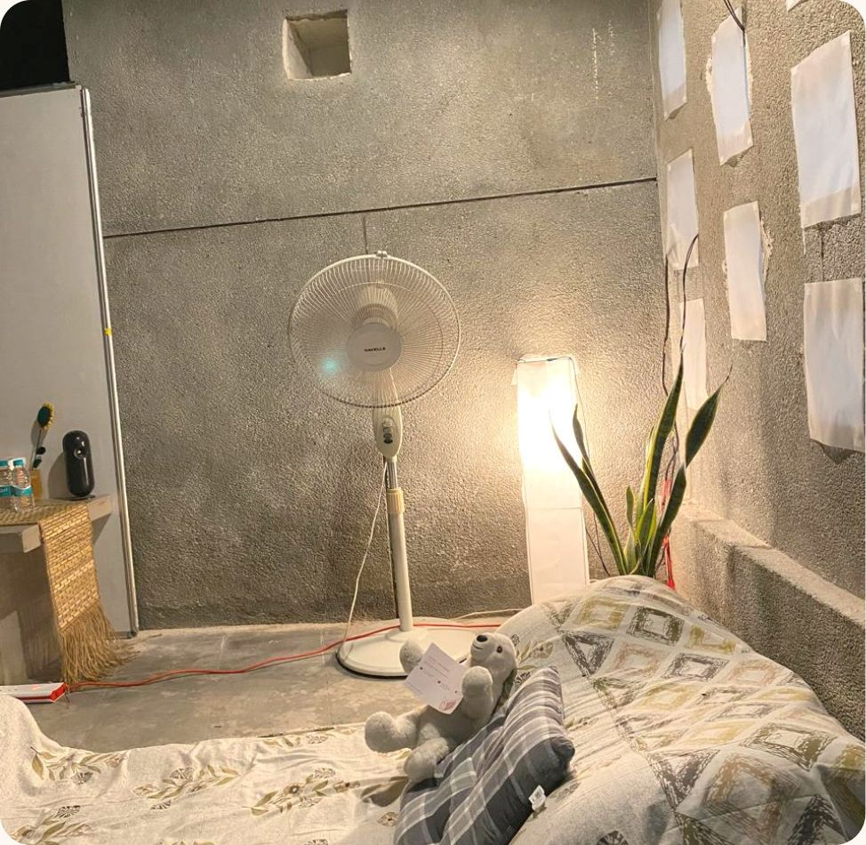
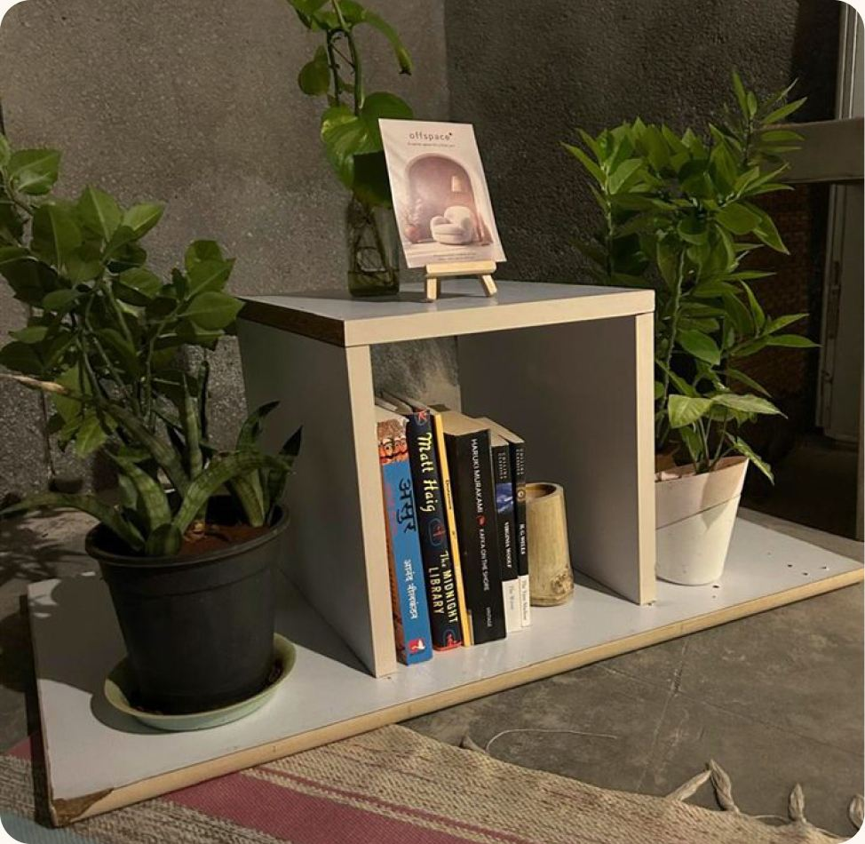
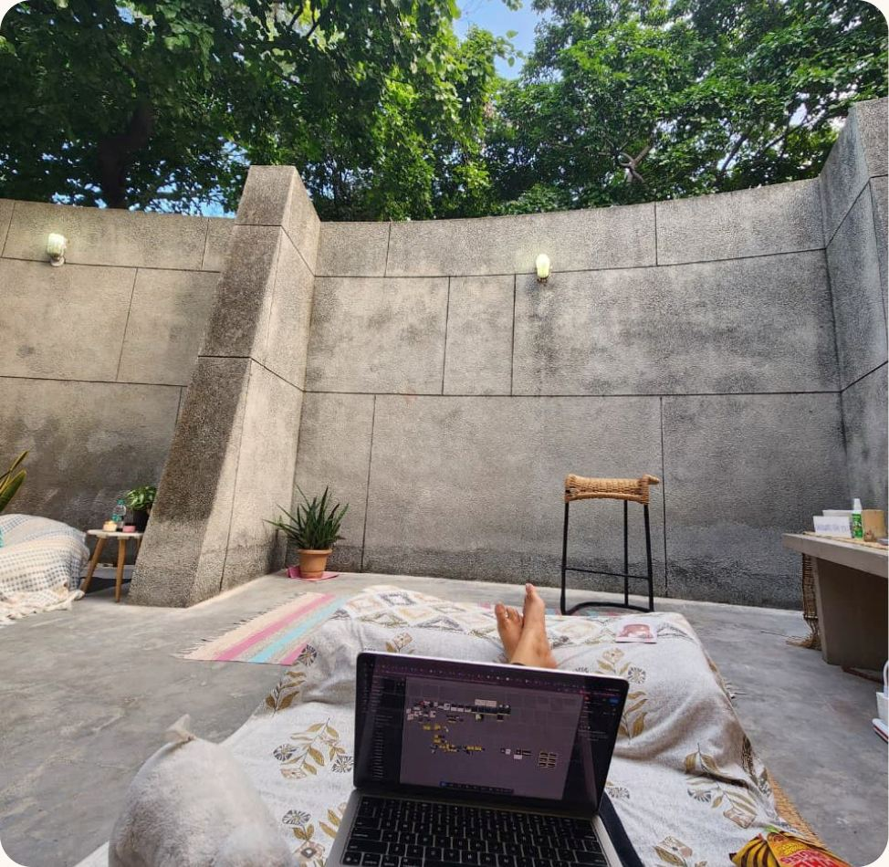
Every booking was logged by hand: slot, length, add ons, when people actually started and left.
6visitors
feedback
β2 set for the improvement of β1. Each goal below is judged on what actually happened, from the two slot logs and the β2 feedback form. The value exchange happened in β2.
metpartly
10 · Service blueprint
The γ proposal as a blueprint: eight stages, from the first poster to the reset after a visit. It builds on the β field report and the team’s whiteboard service form. The green row shows the fix each stage is built around; the red row shows where it can break, and how it recovers.
11 · Gamma proposal
β1 and β2 proved that students want a bookable pause and will pay for it. γ proposes offspace as a full-fledged campus service: open 7 days, 9 am to 1 am, with secure self entry, a booking app, a cleaning and operations team, and fixes for everything, which were missing in β2 . Everything here is proposed, built on the β2 evidence.
offspace sits between students who need a pause and the campus bodies that own the space, the power and the budget. Each one gives something and gets something back.
givesbook, pay, give feedback
getsa calm, private pause
givesowner: approval and budget
getsusage and mood data
givesspaces, power, upkeep
getsa fixed weekly schedule
givespre-ordered snacks, self-care kits
getssteady weekly orders
givesclean and reset in every buffer
getspaid shifts
givesshare the booking link
getsrested, focused students
Owns schedules, vendors and stock; reviews the dashboard every week.
Cleans and resets each space in the 10-minute buffer, then places the next guest’s pre-ordered snack and kit.
Runs the booking app, notifications, the OTP lock and home automation; handles guest queries.
Electrician and gardener for repairs, wiring and the plants.
A fixed daily rhythm from 9 am to 1 am, 7 days a week, and written routines, so every space feels the same whoever is on shift.
Illustrative: one possible mix of 30, 45 and 90-minute bookings (numbers are minutes). This mix fits 15 visits per space per day.
QR on posters, or the link on @off.space.nid
Date, time, 30 / 45 / 90 min; set light, ambience and sound
Snack or drink, paid by UPI at booking
Booking summary on WhatsApp, instantly
Sent before the slot; the OTP opens the lock
Cleaning staff resets the space in the buffer
Soft exit alarm, a gratitude message, a referral coupon
A guest books a time and duration of slot through app, pre orders for food, beverages and sets the light, ambiance and sound before arriving. The confirmation carries the OTP that opens the lock.
Tap “Continue” on the phone to move through the screens →
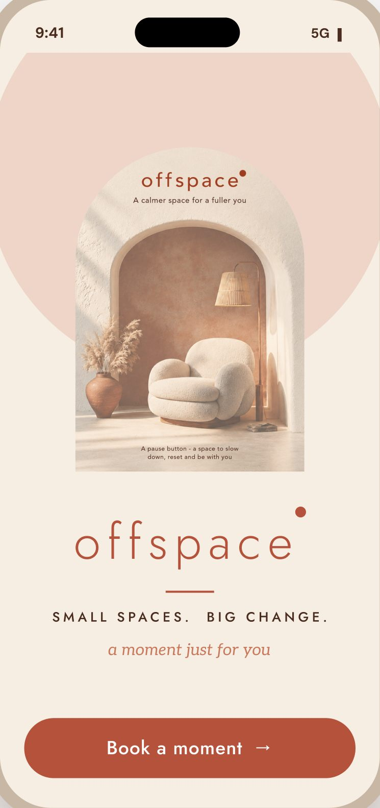
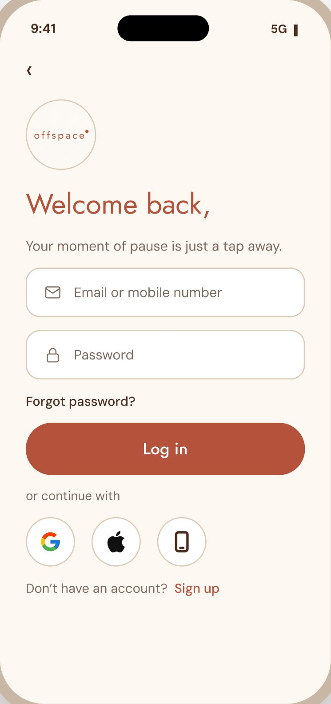
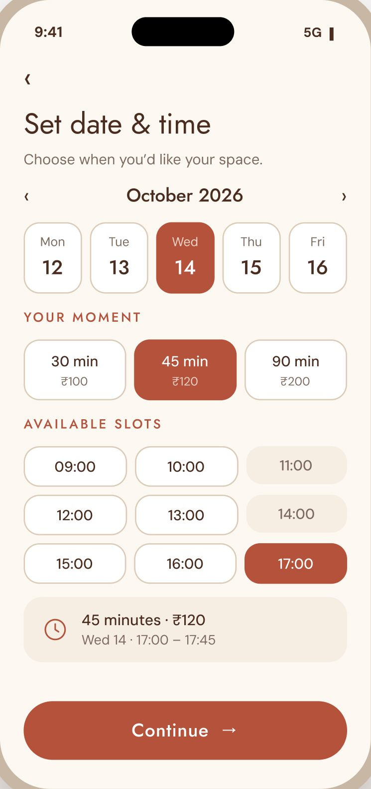
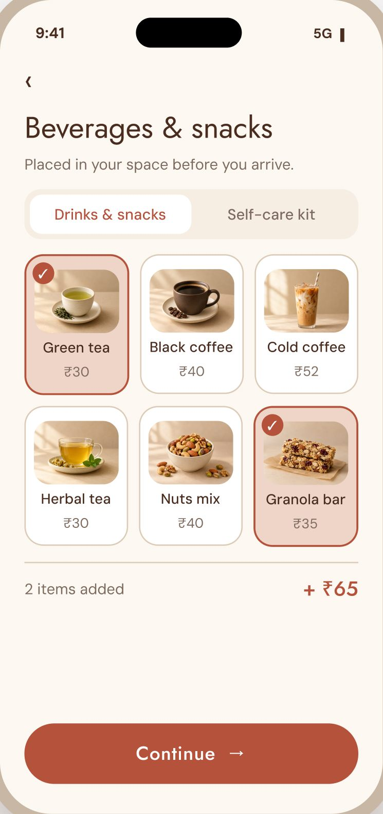
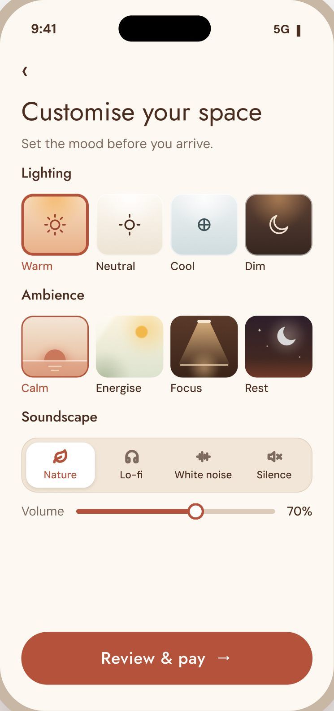
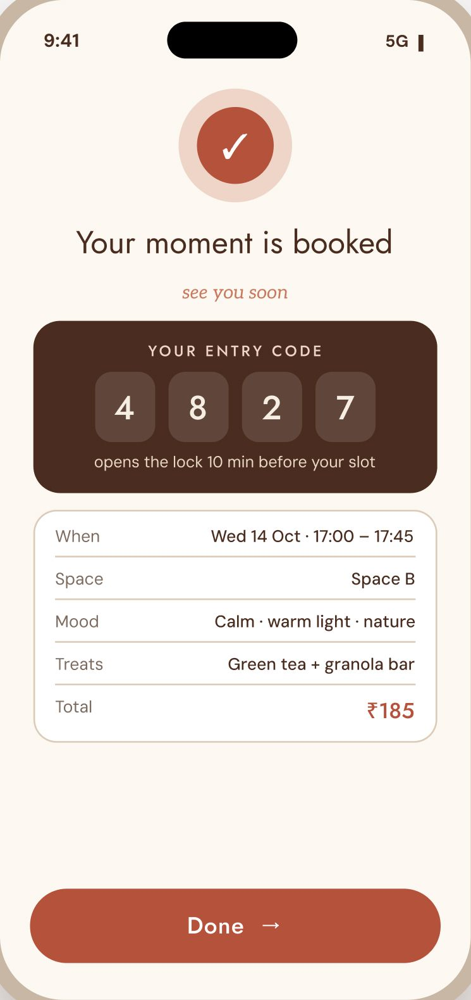
The cleaning staff and the ops team see today’s bookings, each space’s live status (in use, cleaning, ready) and the reset checklist with its 10 minute timer. The lock, lights and alarms report in here.
Tap Today, Spaces and Cleaning on the phone → (sample data)
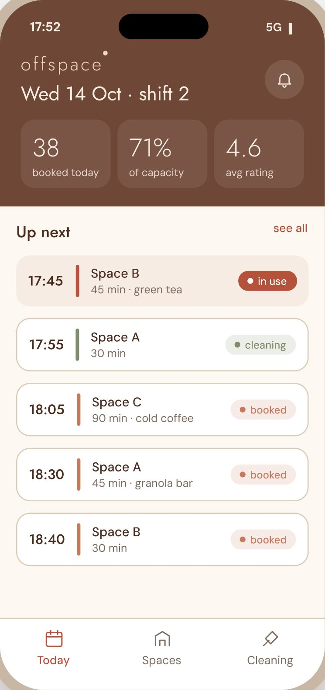
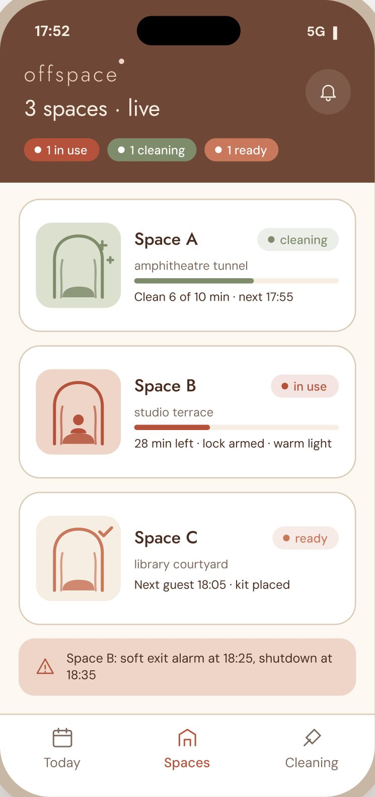
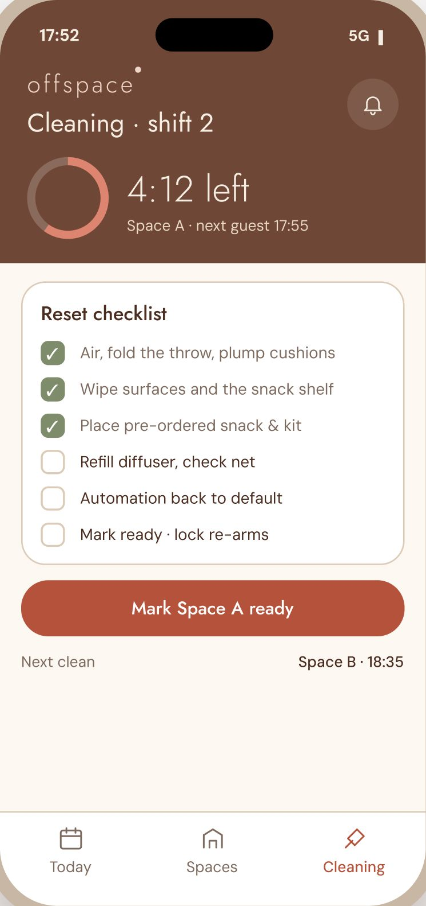
What it costs to set up and run, and how many visits it takes to break even.
total one-time₹2,30,000
total a month₹69,000
₹69,000 a month ÷ ₹120 a visit = 575 visits a month ≈ 133 a week
Each phase proves one thing before the next one spends more.
The booking app, OTP entry, the 10-minute clean and slots length.
proves: the system runs without the team typing messages
The same set-up in three corners of campus, with a cleaning roster.
proves: the kit and the routines travel
The Student Wellness Committee takes ownership; weekly dashboard reviews.
proves: it can last beyond the project team
A playbook and the kit, packaged for other campuses.
proves: offspace is a model, not a one-off